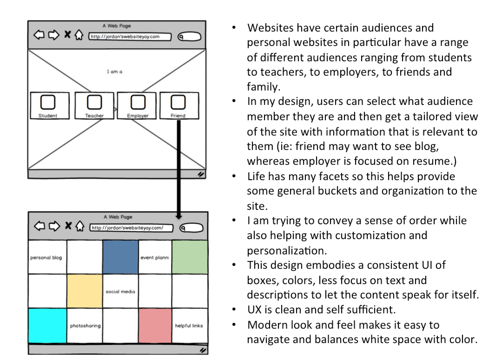

I got sick of the format below so I'm trying out a new format now!
My API can be found here!
I promise I did this! Remember I went to your office ours? I realized I did it in the browser and didn't save it!

1996-2000 Presentation
Here
Reading Response Due 2/1
Tim Berners Lee, "World Wide Web"
One of my favorite parts of this article was when it says, "If you haven't yet experienced the Web, the best way to find about it is to try it." Of course the end of this is true, but the beginning of it really made me think about technoloqy inequity. The way they talk about this in the article seems as though they made an assumption that everybody can just simply access the computer. In 295, we talked about access and how evident the technology gap is. I think this imbalance is something to consider when we move forward in technology focus careers.
It was interesting to learn about the history of W3 and HTTPS and HTML; however, the most interesting part of the article to me was The Futuresection. It is crazy to think about how many of the points mentioned in this section have already been addressed and created so quickly. They talk about creating professional interfaces for publishing documents and services, which exists today. They also imagine real time features and updates occurring, which is evident in Skype and Facebook. The paper also speculates code being used in VR and other interactive ways, which can be seen in Processing. Lastly, they imagine a world where code is accessible for all so many people can edit and be a part of this experience, which, thanks to classes like this, is the case todayt.
UX Reading Response
due 2/29
I hope to be a UX designer in the future so I had actually read several of these articles before being assigned them. I was pleased to learn that Alan Cooper had written one since I had looked into possible internship opportunities at Cooper Design, but felt that they actually favored the interaction design significantly than the overall experience design. After learning more about Cooper in my own research, it is clear after also reading this article that this company prides itself on getting the task complete no matter what the aesthetics look like, whereas I think that good aesthetics make it easier to complete tasks.
The Angry Birds article touched on so many fascinating points about the power of addicting engagement. I think the key to this reading is the power of simple and engaging. This is what also makes social media sites popular for so many different demographics. This article really emphasized how the combination of senses at work from memory to audio to visual is key to creating meaningful experiences.
The article about how users read on the web is so on point! It reminded me of a really cool project idea somebody was brainstorming that would measure where people look on websites based on following eyeballs. I find this absolutely fascinating and think many developers can learn a lot from this!
Reading Response due 1/25
Aesthetics of the Internet - Context as a Medium
http://joi.ito.com/weblog/1997/06/19/aesthetics-of-t.html
This reading explores the concept of the internet as this connector and mediator between different forms.The author argues that this platform is best to be viewed as providing context to information rather than the platform being the content itself. It becomes clear that this reading was written in 1997 in that it views the internet as primarily important when it comes to connecting people to each other. This reading states, "most information on the Internet is about context, rather than content. Instead of the hard data of yesteryear that could be bound in a book, stacked in a warehouse and distributed by trucks, the information on the Internet is about being connected live and about being in the right place at the right time.” I think now we can view the internet as being more than for just connecting people, but for allowing programs, data analysis, platforms for creative expression and more. Nowadays, the internet changes the way people view content, so I think it is more than just context. The conversation about the internet is controvercial in and of itself making it part of the news, not just a platform to display the news. I don't think the information is just a platform for news now; I think the platform itself has become newsworthy and allows for certain interacts and accessibility to take place that couldn't take place prior to the internets development. I appreciated that even when the internet was invented, design aesthetics were already being highly considered; I think the approach of grouping functionality and performance with design at the onset of a development is crucial and it's interesting to think this belief was created at the begging stages of the internet as well.
As We May Think
http://www.theatlantic.com/magazine/archive/1945/07/as-we-may-think/303881/
The main part of this paper that I find particularly relevant is the idea that "information overload" is a natural causation of a developing world and it is important that we use technology to deal with that. The following quotation really embodies the idea of a more complex world and the need to organization information efficiently: "But there is increased evidence that we are being bogged down today as specialization extends. The investigator is staggered by the findings and conclusions of thousands of other workers—conclusions which he cannot find time to grasp, much less to remember, as they appear. Yet specialization becomes increasingly necessary for progress, and the effort to bridge between disciplines is correspondingly superficial.” It's interesting how this article really groups information as whole together as scientific records; I think that again, shows the date of the article (1945) and how the bulk of information at the time was scientific information. It seems as though this article is talking about difficult processes, like developing film, repetitive math, etc. and the author believes that these sometimes, mundane tasks, could be made more efficient by the development of some technology. I think the bulk of the article can be summarized in this quotation: "He has built a civilization so complex that he needs to mechanize his records more fully if he is to push his experiment to its logical conclusion and not merely become bogged down part way there by overtaxing his limited memory. “ This article was forward thinking in that if we are going to develop more things, we need to make sure we have the systems in place to continue to make technology more purposeful, effective, and meaningful.